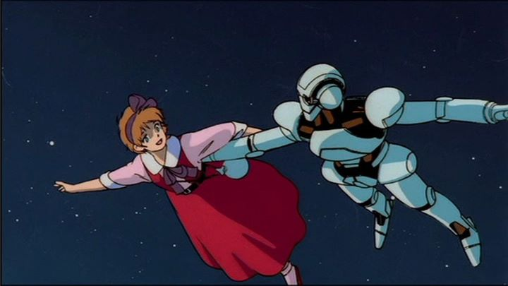

Japan has a long history of anthology animated films. Perhaps you've watched "The Animatrix," "Memories," or "Batman - Gotham Knight?" Or more recently, "Short Peace," "Genius Party" or the online series "The Animator's Expo?" Japan's anime scene easily trumps the rest of the world in diversity and quantity, and those animators need to start out somewhere; a short film coupled with others makes for a great trial run. While Disney's "Fantasia" is probably the first real example of such a movie, one of Japan's first attempts was in 1987's "Robot Carnival." Your appreciation for it will depend heavily on how much you like anthologies and animation. Generally, I like both very much, and was excited to watch "Carnival" when Discotek rescued the film in North America, giving it a beautiful remastered release. One of the most notable things about it turned out to be how unmemorable it was. That's an unfortunate property to have... thankfully, it did make re-watching it for this review more interesting.The shared theme among all of "Robot Carnival's" shorts is simply "robots." From there, the genres range from dark comedy, to romance, to fantasy, and back again. Some stories are about robots being created by scientists in an effort to understand life. Some stories are about robots that save the day. In the opening sequence, the most memorable part (co-directed by "Akira's" Katsuhiro Otomo), a massive stage of dancing robots forever moves forward through a vast desert, performing a dance, not paying any attention to the human cities it destroys along the way. One of the most impressive things about "Robot Carnival" is the animation. This was released around the time of the anime classic "Akira," and both come across like a foreign Disney movie rather than a cheap and limited-budget anime. The animation is smooth and expressive, a delight to watch... most of the time. The shorts vary in style and tone, and a couple of the shorts do feel like a generic 80's sci-fi anime, with all the flaws that come with it. That's the only reason I'd hesitate even slightly to sharing this with friends or family, which is a shame, because some of the packaged films really are extraordinary. I'll briefly list the shorts here. the "Opening" sequence was already mentioned, using complex animation for a simple comedic joke. "Fraken's Gears" was also an impressive animation showcase, about an alternate Victor Frakenstein creating a robot that can move, with a punchline ending. "Deprive" is the one that looks like standard 80's tv anime, about a robot hero saving a girl from a band of evil robots, a skippable but fair sample of what tv was like at the time. "Presence" returns to better animation, with a deep but predictable story about creating a robot, and the meaning of life and love. "Star Light Angel" is like a music video that takes place in a theme park, an in-between of old visual tastes with solid animation. "Cloud" is the most experimental piece, with virtually no animation at all, instead transitioning comic-panels on the screen to tell a somber story of a lone robot's life (no don't inspired by the limited animation of "Belladonna of Sadness" from the "Animerama" trilogy). "A Tale of Two Robots" is another 80's style comedy, of two massive robots attacking each other during the Meiji period (and comes across as slightly racist, especially in the old English dub). "Nightmare" is one of the most memorable poster shorts, and looks like a rejected nightmare sequence from "Akira," in a good way, of a hapless human getting caught in a battle between good and bad robots in the middle of the city. And finally, the "Ending" sequence, which follows the subject of the "Opening," with the Monty Python-esque title monolith driving out to the rest of the world as credits roll. All of the stories are relatively family friendly, despite some cartoon violence and high-level subject matter. While I don't love them all equally, I do certainly love them all. "Robot Carnival" is special. But somehow, it doesn't seem as memorable as "Fantasia," or even more recent anthologies like "The Animatrix." Robots and science fiction has become a very "anime" thing, and doesn't age well as a concept compared to more universal and timeless themes, like dancing mushrooms and evil mountain gods. Despite fitting nine shorts in just 90 minutes, almost all of them are slow. The experience was like watching a short-film festival: I enjoyed it and appreciate it tremendously, but will continue to forget it shortly after I watch it, almost every time. A brief note on the music: like the direcotrs, multiple musicans were involved, one of which is none other than Studio Ghibli's Joe Hisaishi. You'll definitely recognize his style. But like "Fantasia," it feels like the music was written before the shorts were, so as great as the electric soundtrack is, it feels out of sync with what occurs on screen. Most of the shorts don't have an English dub, but those that do sound fine, even though the existing dub was made by Streamline pictures in the 90's. Discotek's DVD does include that dub, as well as a text-essay about the history of the film (a Bluray was released shortly after, containing a narrated slideshow of that history in an easier-to-watch format). The visual quality on home video really shines, and when mixed with the quality animation, you'd swear it was produced recently, rather than over 30 years ago. Technically, "Robot Carnival" was released around the same time as "Neo Tokyo," so it may not necessarily hold the title as "first" anime anthology (although the history behind that is fascinating in itself). But there's no doubt about it, "Robot Carnival" is important, and should be watched by everyone for that merit alone. Otherwise, it's also mandatory viewing for anyone who likes great animation, or old anime. And, I guess, anyone who likes robots. That covers just about everyone, doesn't it?
- "Ani" More reviews can be found at : https://2danicritic.github.io/ Previous review: review_Ringing_Bell Next review: review_Rock-a-Doodle